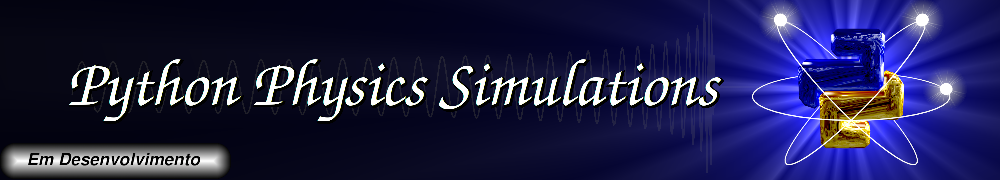
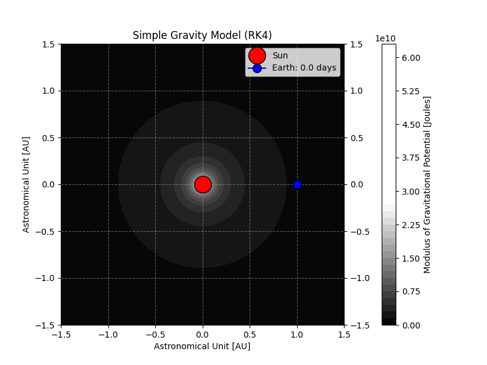

Conteúdos Postados
Introdução ao Python:
- Comandos print, type e variáveis dos tipos str, int e float;
- Variáveis Booleanas, Operadores Relacionais, Comandos (if, while, do, for);
- Listas, Vetores, Matrizes e Biblioteca Numpy;
- Geração de Gráficos com a Biblioteca Matplotlib;
- Funções e Manipulação de Arquivos;
- Biblioteca de Sistema Operacional OS;
- Biblioteca Científica Scipy
Primeira Simulação
Órbita da Terra via solução numérica da respectiva equação de movimento usando o método
de Runge-Kutta de quarta ordem.

Equação de Movimento:
$$\frac{d^2\vec{r}}{dt^2} = -\frac{GM_{\odot}}{r^2}\hat{r}$$
$$(\ddot{r}-\dot{\phi}r)\hat{r} + (2\dot{\phi}\dot{r}+\ddot{\phi}r)\hat{\phi} = -\frac{GM_{\odot}}{r^2}\hat{r}$$
Código em breve ...